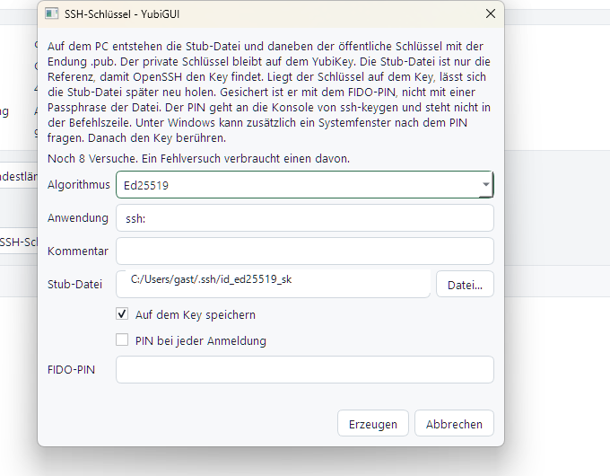

SSH-Schlüssel
Der Knopf SSH-Schlüssel steht auf der FIDO-Seite, in der Zeile unter Anmeldedaten. Er startet ssh-keygen. YubiGUI spricht den Key dafür nicht selbst an. Der private Schlüssel bleibt auf dem YubiKey. Auf dem Rechner entstehen zwei Dateien: die Stub-Datei und daneben der öffentliche Schlüssel mit der Endung .pub.

Der Knopf ist bedienbar, wenn ein FIDO-PIN gesetzt ist, noch Versuche übrig sind, der PIN nicht erst geändert werden muss, und ssh-keygen gefunden wird. Unter Windows ist das der optionale OpenSSH-Client. Fehlt er, bleibt der Knopf grau.
Was wo liegen bleibt
Die Stub-Datei ist die Referenz, damit OpenSSH den Key findet. Sie enthält den privaten Schlüssel nicht. Der öffentliche Schlüssel in der .pub-Datei ist die Zeile, die auf den Server gehört, in authorized_keys. Gesichert ist der Schlüssel mit dem FIDO-PIN, nicht mit einer Passphrase der Datei.
Anmelden kann man erst, wenn diese Zeile auf dem Server steht und die Stub-Datei auf dem Rechner liegt, von dem aus die Anmeldung geht.
Die Felder
- Algorithmus. Ed25519 schreibt
id_ed25519_sk. ECDSA P-256 schreibtid_ecdsa_sk. Solange der Pfad noch der Vorschlag ist, wechselt der Dateiname mit. - Anwendung. Vor dem Feld steht fest
ssh:. Der Rest ist optional, darf kein Leerzeichen enthalten und ergibt zusammen mitssh:höchstens 100 Zeichen. Leer lassen reicht für eine gewöhnliche Anmeldung. Ein Zusatz wiegithubwird zussh:github. - Kommentar. Steht mit in der
.pub-Zeile, damit man den Schlüssel später wiedererkennt. Er darf keinen Zeilenumbruch enthalten. - Stub-Datei. Datei… wählt den Ort. Liegen die Stub-Datei oder die
.pubschon dort, bricht der Dialog ab, bevor etwas überschrieben wird. - FIDO-PIN. Er geht an die Konsole von
ssh-keygenund steht nicht in der Befehlszeile. Unter Windows kann zusätzlich ein Systemfenster nach dem PIN fragen. Danach den Key berühren. Ein falscher PIN verbraucht einen FIDO-Versuch.
Auf dem Key speichern
Das Häkchen ist vorausgewählt. Dann legt ssh-keygen einen residenten Schlüssel an, also einen, den der Key selbst behält. Nur den holt Stubs holen später wieder. Der FIDO-PIN ist dafür nötig.
PIN bei jeder Anmeldung verlangt den FIDO-PIN auch dann, wenn der Dienst das nicht tut. OpenSSH ruft das verify-required.
Stubs holen
Stubs holen steht neben SSH-Schlüssel. ssh-keygen liest die auf dem Key gespeicherten SSH-Schlüssel und schreibt Stub-Datei und öffentlichen Schlüssel in den gewählten Ordner. Der private Schlüssel bleibt auf dem YubiKey. Der FIDO-PIN geht wieder an die Konsole. Das gilt für residente Schlüssel. Eine Stub-Datei, die nie auf dem Key gespeichert wurde, kommt so nicht zurück.